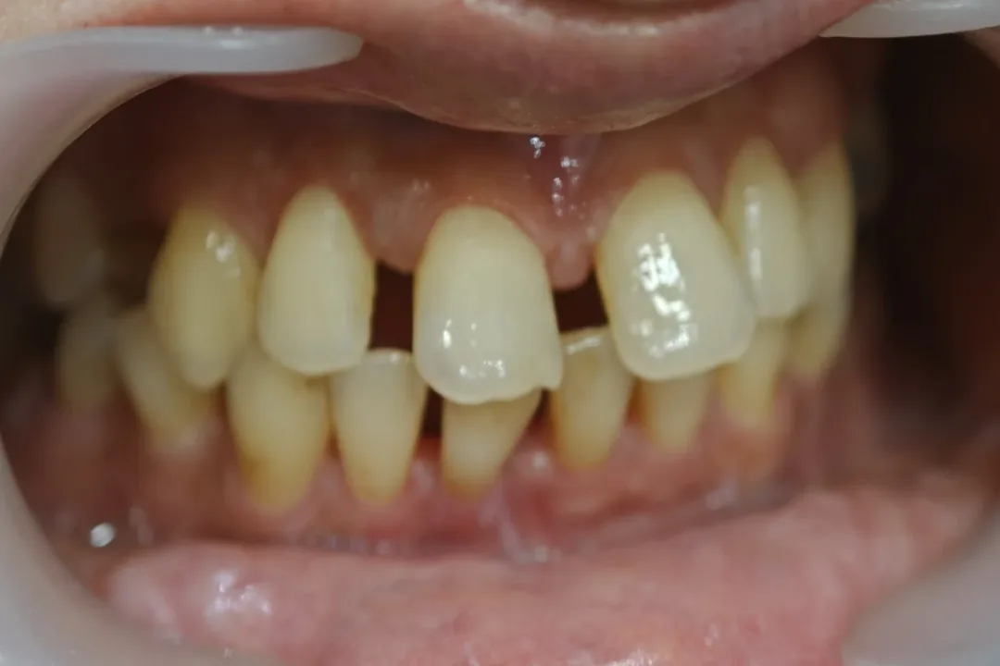
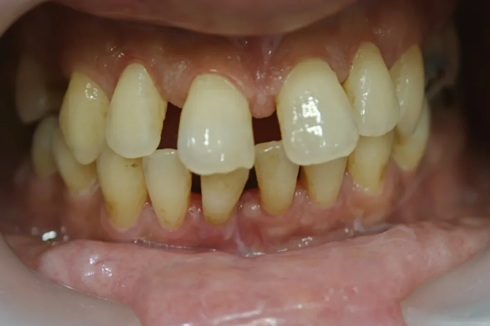
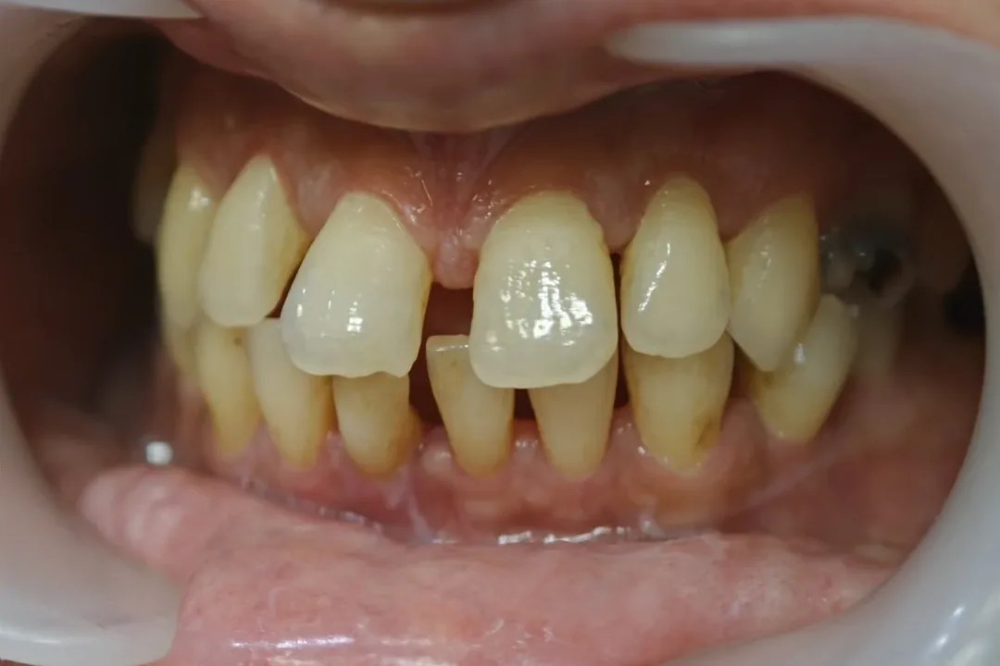
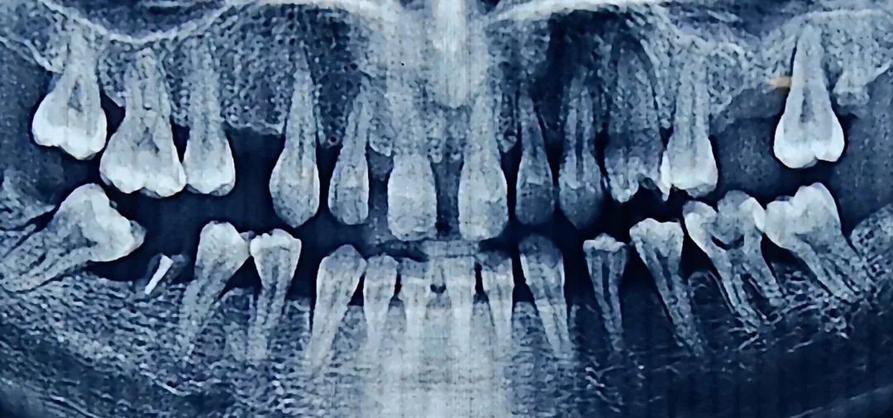
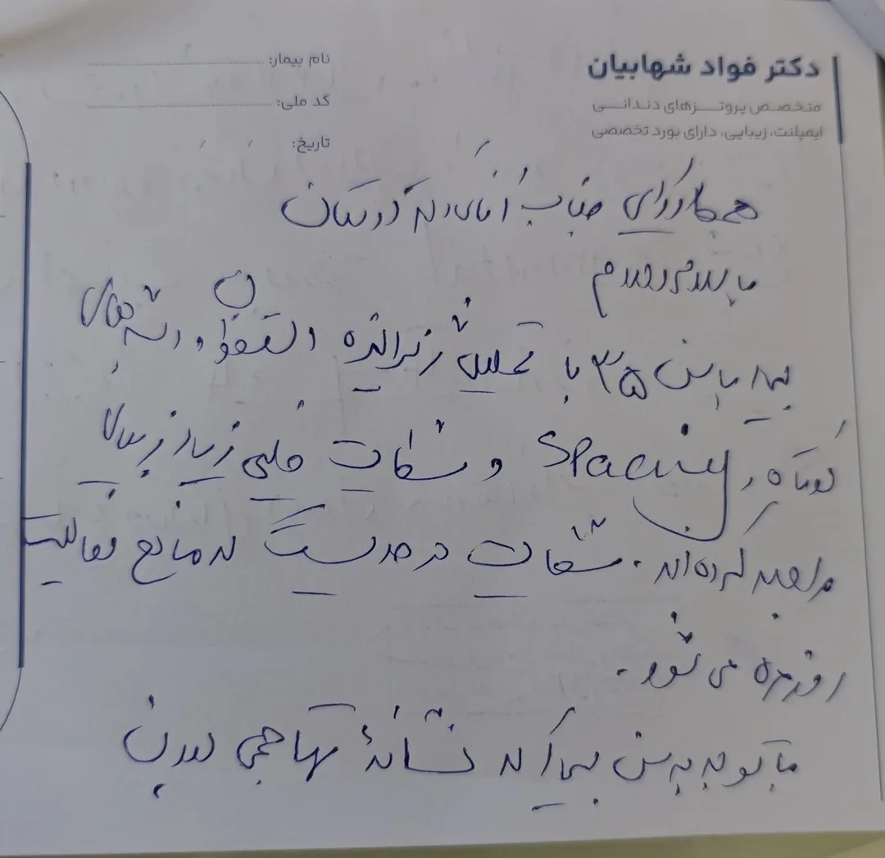
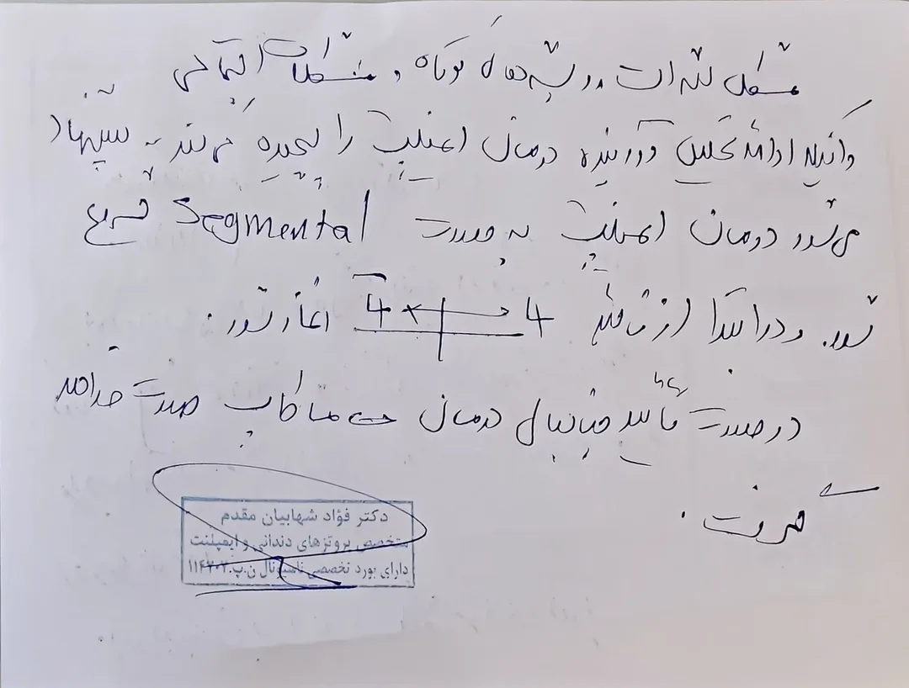
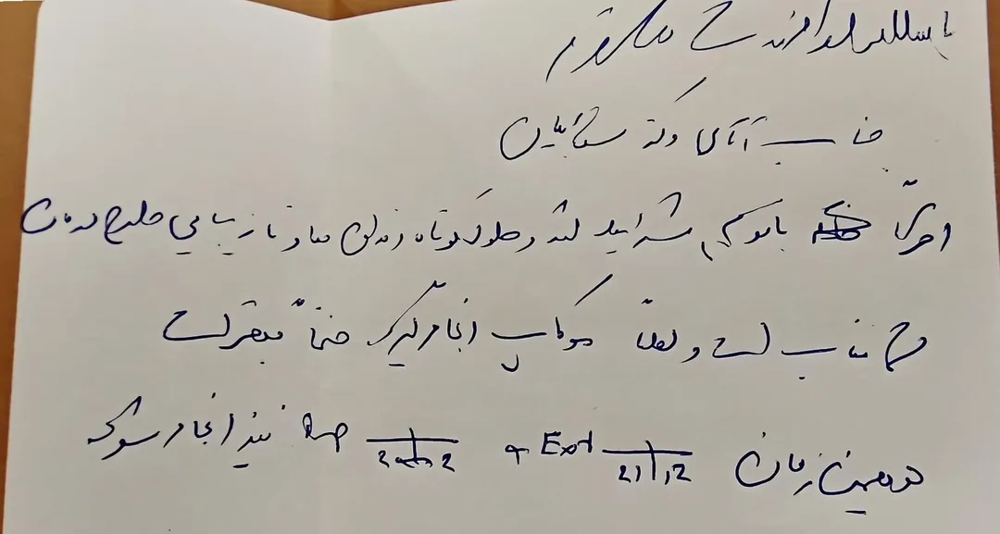

Chairside 40
شرح ویزیت: بیمار ۳۵ ساله، تحلیل استخوان ژنرالیزه و درمان ایمپلنت Segmental
شکایت اصلی و شرح حال
بیمار خانم ۳۵ ساله است و شکایت اصلی او زیبایی دندانهای قدامی است، اما در معاینه spacing ژنرالیزه در تمام قوسها و تحلیل استخوان دیده میشود. وقتی از او پرسیدم مشکل زیبایی چقدر برایش جدی است، گفت به حدی است که از خانه بیرون نمیرود.
بیمار قبلاً یک بار برای درمان زیبایی مراجعه کرده بود. با وضعیت موجود، درمان زیبایی امکانپذیر نبود و بیمار برای ارتودنسی ارجاع شد. متخصص ارتودنسی بیمار را برگرداند و اعلام کرد درمان ارتودنسی امکانپذیر نیست. بیمار تحت درمان پریو است و متخصص پریو او را به سمت پروتز ارجاع داده است.
معاینهی بالینی
spacing ژنرالیزه در تمام قوسهای بالا و پایین دیده میشود. بین سانترالها و لترالهای بالا فاصلهی واضح وجود دارد و موقعیت سانترالها به هم ریخته است. در دندانهای قدامی پایین هم فاصله و تحلیل لثه دیده میشود.



یافتههای رادیوگرافی
در رادیوگرافی پانورامیک، تحلیل استخوان ژنرالیزه دیده میشود. ریشهها، بهویژه در دندانهای قدامی، کوتاه هستند و نسبت تاج به ریشه نامطلوب است.

مشاورهها
- ارتودنسی: متخصص ارتودنسی اعلام کرده درمان ارتودنسی برای این بیمار قابل انجام نیست.
- پریو: بیمار تحت درمان پریو است و متخصص پریو او را برای درمان به سمت پروتز ارجاع داده است.
استدلال بالینی و تصمیم درمانی
دندانهای این بیمار در حال حاضر در دهان باقی هستند، اما پروگنوز زیبایی ندارند. ارتودنسی به دلیل ریشههای کوتاه و تحلیل استخوان کنار گذاشته شده و با حفظ دندانها، راهی برای حل مشکل زیبایی باقی نمیماند.
بیمار ۳۵ ساله است و در این سن چنین تحلیل استخوانی دارد. این نسبت تحلیل به سن نشان میدهد بیماری پریودنتال سیر تهاجمی دارد. اگر صبر کنیم و تحلیل ادامه پیدا کند، استخوان باقیمانده کمتر میشود و ممکن است فرصت درمان ایمپلنت در شرایط خوب از دست برود.
از طرف دیگر، مشکل زیبایی کیفیت زندگی بیمار را بهشدت تحت تأثیر قرار داده، تا حدی که از خانه بیرون نمیرود. ارتودنسی کنار کشیده و پریو بیمار را به پروتز ارجاع داده، بنابراین تصمیم نهایی باید از سمت درمان پروتزی گرفته میشد.
تصمیم این است که دندانها با برنامهی مشخص کشیده شوند و درمان ایمپلنت به صورت Segmental انجام شود، تا هم مشکل زیبایی بیمار حل شود و هم استخوان پیش از تحلیل بیشتر برای ایمپلنت حفظ شود.
نامهی ارجاع به متخصص پریو
در نامه، شرایط بیمار (سن پایین، تحلیل ژنرالیزه، ریشههای کوتاه، spacing و مشکل شدید زیبایی) و احتمال تهاجمی بودن بیماری شرح داده شد. پیشنهاد شد درمان ایمپلنت به صورت Segmental از ۴ تا ۴ بالا شروع شود و پیش از جراحی، ماکاپ برای تعیین موقعیت ایمپلنتها و تأیید ظاهر نهایی انجام شود.


پاسخ متخصص پریو
متخصص پریو با توجه به شرایط لثه، طول کوتاه ریشهها و مشکل زیبایی، طرح درمان را مناسب دانست. ایشان درخواست کرد در همین مرحله، چهار دندان قدامی پایین (۲۱|۱۲) هم کشیده و با ایمپلنت جایگزین شوند.

طرح درمان
- ماکاپ برای تعیین موقعیت ایمپلنتها و تأیید ظاهر نهایی، تا حد ممکن، پیش از هر اقدام جراحی
- سگمنت اول: کشیدن دندانهای ۴ تا ۴ یا ۵ تا ۵ بالا و قرار دادن ایمپلنت
- همزمان، طبق نظر متخصص پریو: کشیدن چهار دندان قدامی پایین و جایگزینی با ایمپلنت
- ادامهی درمان در سگمنتهای بعدی بر اساس پاسخ درمان
محتوای این صفحه برای استفادهٔ آموزشی دندانپزشکان و دانشجویان دندانپزشکی تهیه شده است.